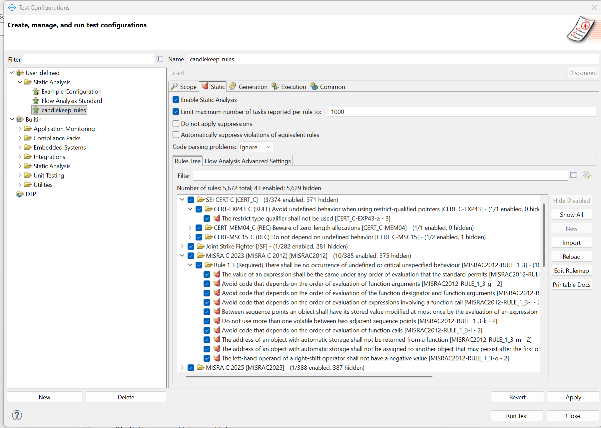
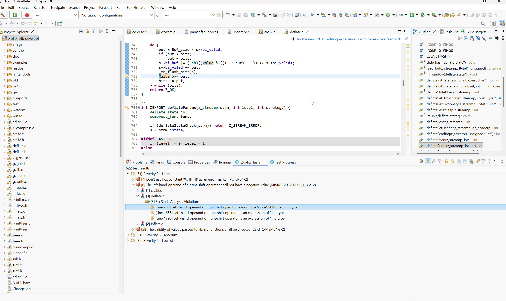

Using CandleKeep AI document research + Parasoft C++test static analysis to identify and remove undefined, unspecified & implementation-defined behavior from C projects
Swipe or use ← → to navigate
The ISO C standard leaves hundreds of behaviors deliberately undefined — your code may work today and fail on a different compiler, platform, or optimization level tomorrow
Anything can happen. Compiler may crash, corrupt memory, or silently "optimize away" your code.
Multiple valid outcomes. Results differ between compilers or runs.
Compiler chooses. Works on your machine, breaks on target.
Source: ISO/IEC 9899 Annex J (J.1, J.2, J.3)
These behaviors are documented across 18,000+ pages of standards — no single Parasoft configuration file targets only these issues
From 18,000 pages of standards to identified and fixed code violations
candlekeep_rulesAmp reads 18,000+ pages across 4 standards in parallel, maps each Annex J behavior to specific Parasoft rules
ck items listcandlekeep_rules.properties with 68 rulesFrom a generic 4,220-line config with all rules → a focused 315-line config targeting only ISO C behaviors
The candlekeep_rules configuration loaded in Parasoft C++test — 43 rules enabled out of 5,672

candlekeep_rules user-defined configuration under Static Analysis.
43 rules enabled out of 5,672 total.
Expanded: MISRA C:2012 Rule 1.3 — "There shall be no occurrence of undefined or critical unspecified behaviour" — with 10 sub-rules covering evaluation order, volatile access, signed right-shift, and more.
Also visible: CERT C (EXP43, MSC15) and JSF-167.
Running candlekeep_rules against the zlib open-source library — 622 violations identified

deflate.c line 753 (value >>= put;) — implementation-defined behavior0xffffffff used as error marker — non-portabledeflate.cA real violation caught by the scan — implementation-defined behavior in a widely-used library
Rule: MISRAC2012-RULE_1_3-o
File: deflate.c, line 753
Issue: Right-shift of a signed negative value
ISO C §6.5.7: "If E1 has a signed type and a negative value, the resulting value is implementation-defined."
GCC: arithmetic shift (sign-extends)
Other compilers: may logical shift (zero-fills)
→ Different results on different platforms!
68 rules across three ISO C behavior categories — every Annex J area covered
restrict violationsEnsures deterministic execution on any compiler
char signedness#pragma usageWhat changes when you scan and fix all violations
f(a++, a++) → different results per compilerchar c = 200 → works on ARM, breaks on x86value >>= put → impl-defined when negativeEnd-to-end: from ISO C standard → identified violations → better, more stable C code
| # | Step | Tool | Result |
|---|---|---|---|
| 1 | Upload ISO C, MISRA, CERT, Parasoft docs | CandleKeep | 18,042 pages searchable |
| 2 | AI cross-references Annex J → Parasoft rules | Amp + CandleKeep | 68 rules identified |
| 3 | Generate candlekeep_rules.properties | Amp | 315-line focused config |
| 4 | Load config into Parasoft C++test | Parasoft | 43 of 5,672 rules enabled |
| 5 | Scan C project (e.g., zlib) | Parasoft | 622 violations found |
| 6 | Fix all violations | Developer | Deterministic, stable C code |